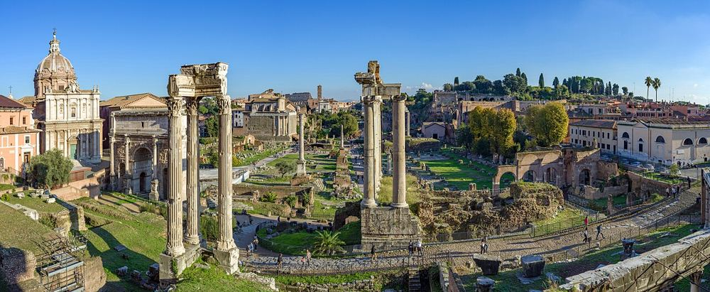

Forum romain et Palatin
Le cœur de la Rome antique, très peu ombragé et entièrement pavé. Visitez tôt, chapeaux et eau obligatoires, porte-bébé conseillé.


Ce que les enfants vont aimer
C'était la grande place de la ville, avec ses temples et ses marchés.
Autour du lieu
Toilettes, tables à langer, aires de jeux, eau potable, pharmacie et station les plus proches, avec le temps de marche.
- Toilettes : Toilettes publiques, à 4 min à pied (140 m) · gratuit · accès fauteuil
- Toilettes : Toilettes publiques, à 4 min à pied (150 m)
- Table à langer : Toilettes avec table à langer, à 3 min à pied (110 m) · gratuit · accès fauteuil
- Eau potable : Point d'eau potable, à 3 min à pied (130 m)
- Pharmacie : Pharmacie, à 10 min à pied (390 m)
- Station : Colosseo, à 13 min à pied (520 m) · accès sans marche signalé
D'après OpenStreetMap, non vérifié sur place.
À combiner dans la journée
Bouche de la Vérité
Ose mettre ta main dans la bouche : la légende dit qu'elle mord les menteurs !
À 15 min à pied (590 m) · 4–12 ans
Colisée
Ici, les gladiateurs se battaient devant une foule immense. Imagine le bruit !
À 16 min à pied (630 m) · 6–17 ans
Cirque Maxime
Fais la course comme les chars romains sur cette grande piste d'herbe.
À 19 min à pied (710 m) · 0–17 ans
S'il pleut : le plan B couvert
Questions fréquentes
Forum romain et Palatin : à partir de quel âge ?
Nous le conseillons de 8 à 17 ans. C'était la grande place de la ville, avec ses temples et ses marchés.
Forum romain et Palatin : combien de temps prévoir ?
Environ 2 h sur place, sans compter le trajet.
Forum romain et Palatin : peut-on y aller avec une poussette ?
Porte-bébé conseillé. Beaucoup de rues pavées autour; beaucoup d'escaliers dans le quartier (59 recensés à moins de 250 m); station la plus proche : colosseo, à 520 m, accès sans marche signalé; 3 ascenseurs publics signalés à moins de 400 m.
Forum romain et Palatin : comment y aller ?
Via della Salara Vecchia, 5/6, 00186 Roma. Métro Colosseo (ligne B).
Fiche vérifiée le 29 octobre 2026. Horaires, tarifs et conditions d'accès changent souvent : vérifiez toujours sur le site officiel avant de partir. Tous les lieux de Rome avec des enfants.